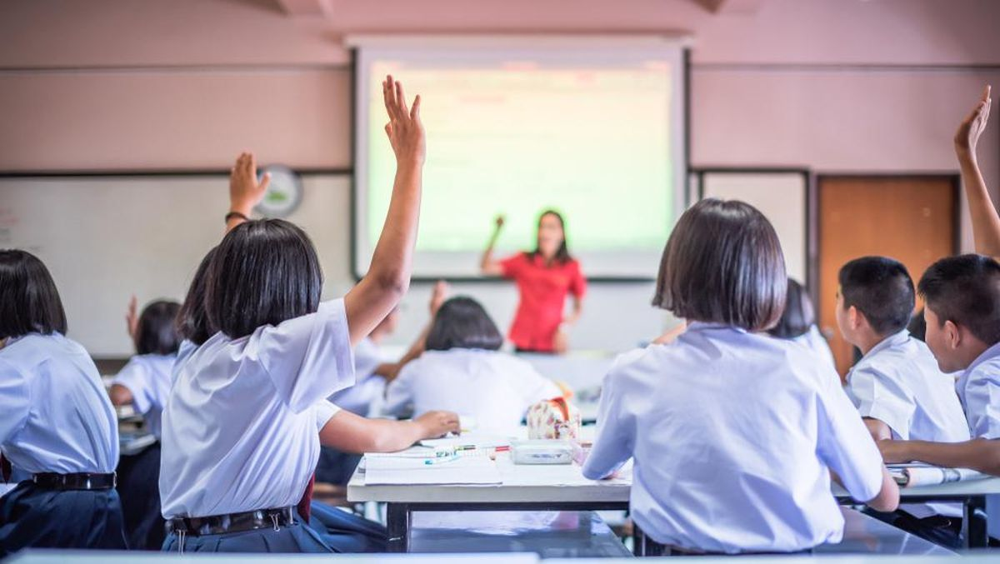
Sustainable Development Goals (SDGs) or Tujuan Pembangunan Berkelanjutan is a global UN agenda agreed upon by 193 countries, including Indonesia, in 2015, consisting of 17 goals and 169 targets toward 2030 across economic, social, and environmental dimensions.
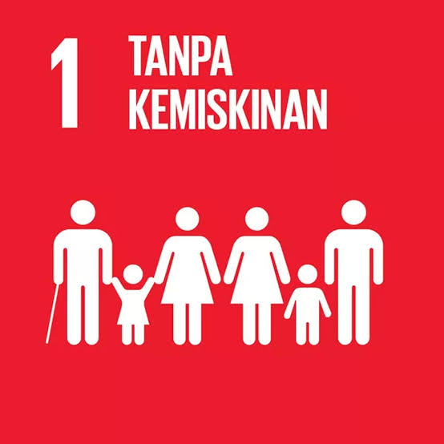
Ending poverty in all its forms everywhere through social protection, basic services, and economic empowerment.
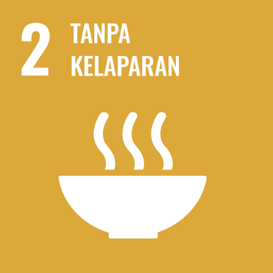
Promoting food security, improved nutrition, and sustainable agriculture so everyone has access to nutritious food.
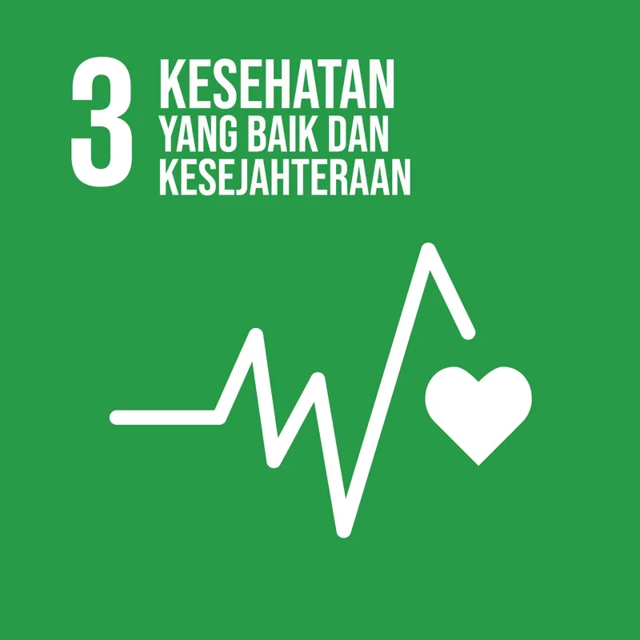
Ensuring healthy lives and promoting well-being at all ages, including maternal/child health, disease prevention, and mental health.
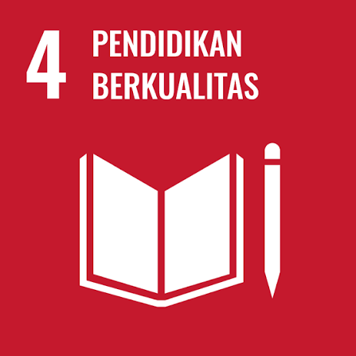
Ensuring inclusive and equitable quality education and lifelong learning opportunities for all, including literacy, numeracy, and vocational skills.

Achieving gender equality and empowering all women and girls by ending discrimination, violence, and unequal opportunities.
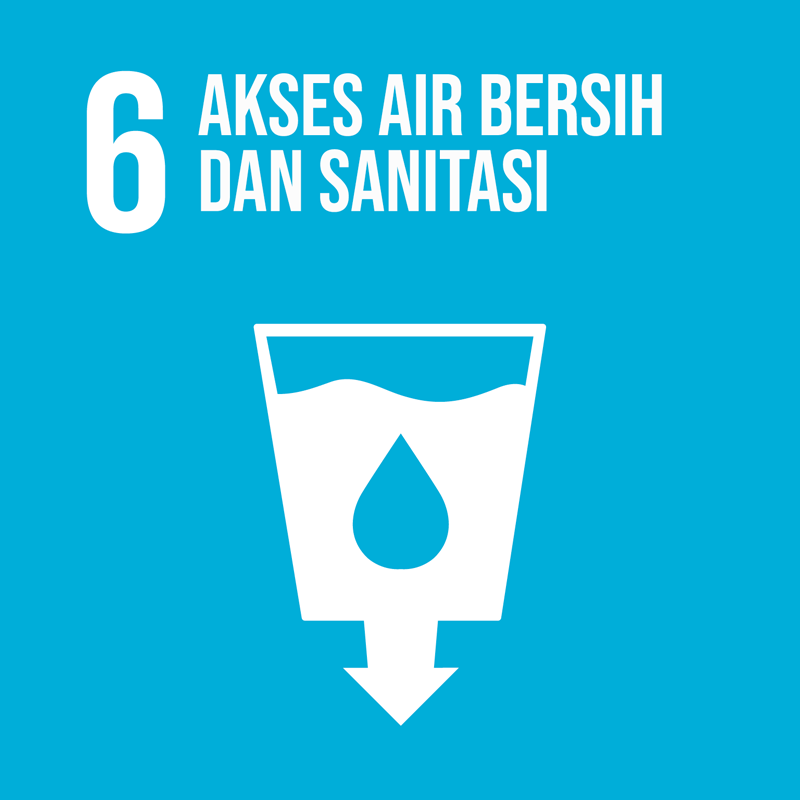
Ensuring sustainable water management, safe drinking water, and hygienic sanitation facilities for everyone.
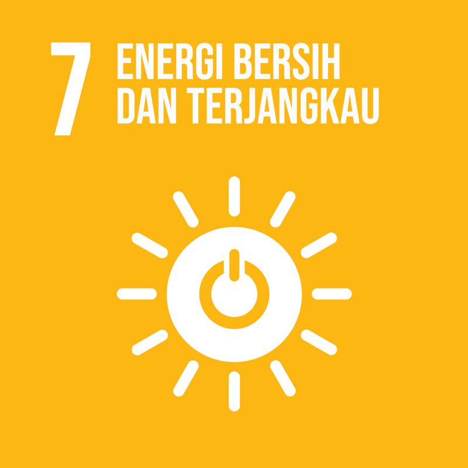
Expanding access to reliable, sustainable, and modern energy while increasing renewable energy sources.
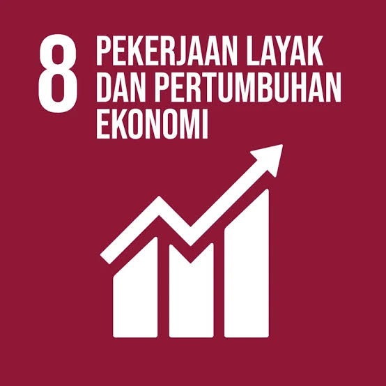
Promoting sustained, inclusive economic growth, productive employment, safe working conditions, and ending child/forced labor.
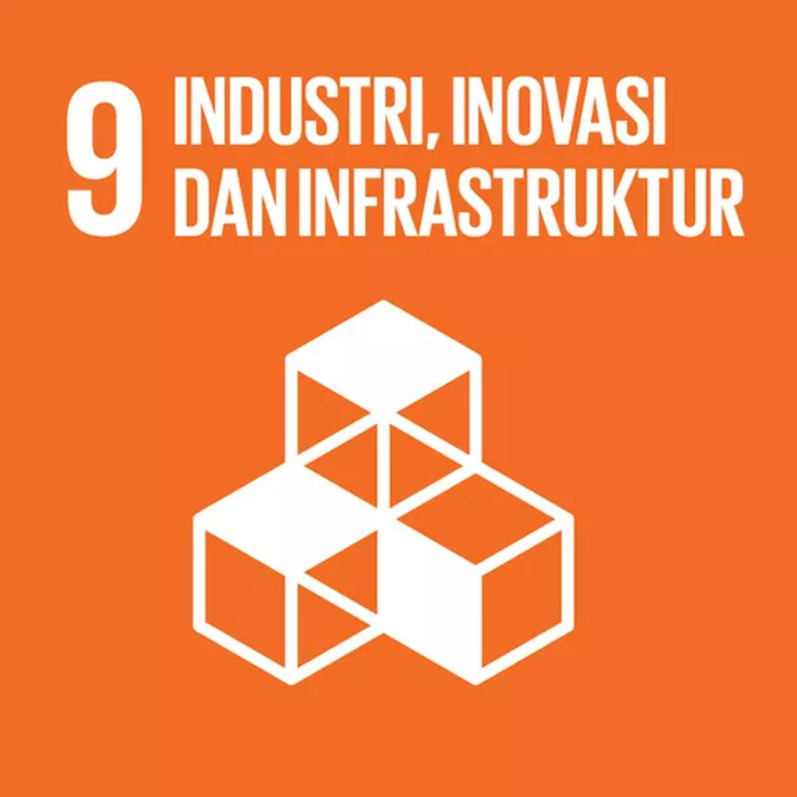
Building resilient infrastructure, promoting inclusive and sustainable industrialization, and supporting innovation and ICT access.
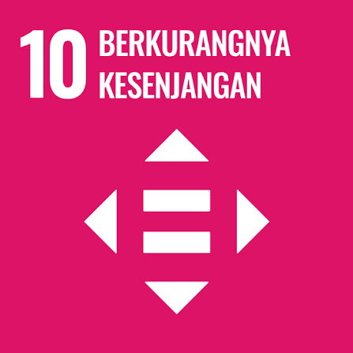
Reducing income and social inequalities within and among countries through inclusive policies and protection for vulnerable groups.
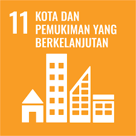
Making cities and human settlements inclusive, safe, resilient, and sustainable with decent housing, transit, and waste management.
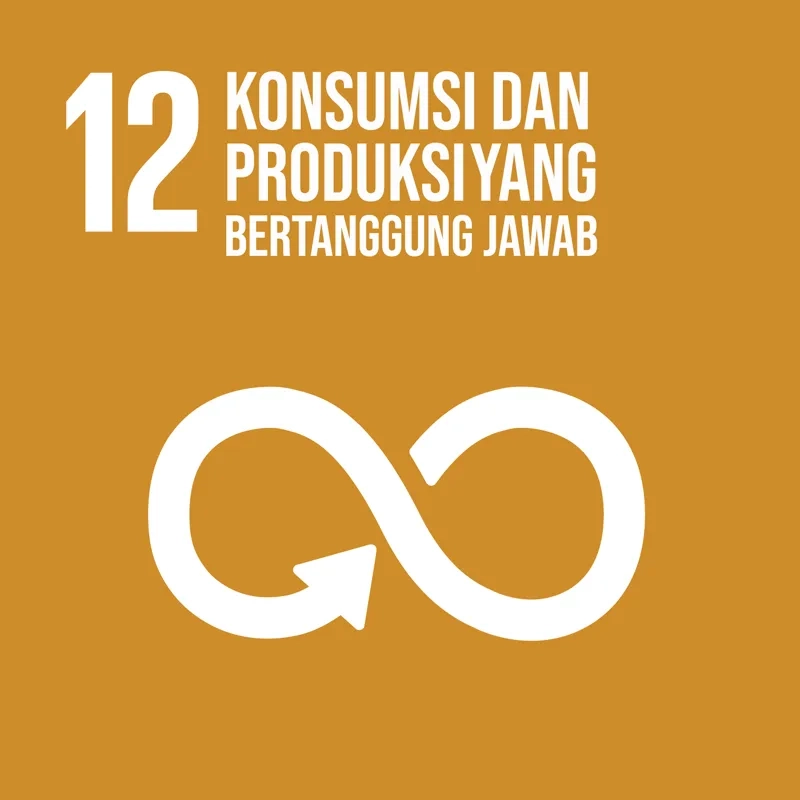
Encouraging sustainable consumption and production patterns, reducing waste, saving energy, and using eco-friendly materials.
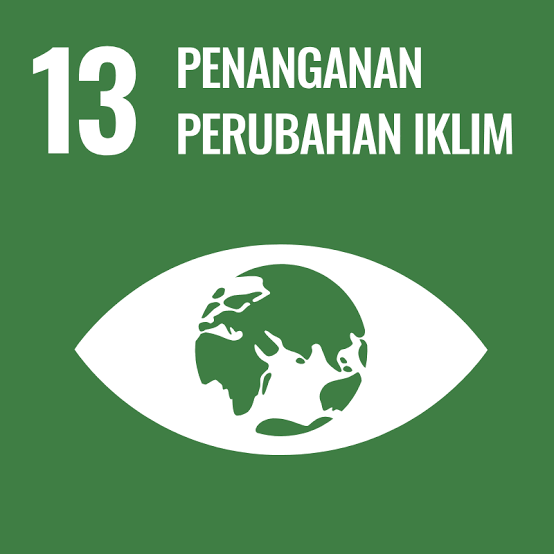
Taking urgent action to combat climate change and its impacts through mitigation, adaptation, emission reduction, and resilience.
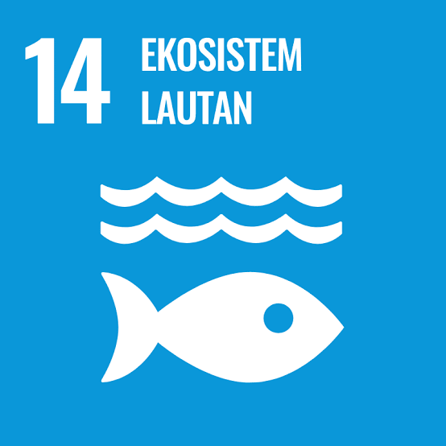
Conserving and sustainably using oceans, seas, and marine resources while reducing marine pollution and protecting coral reefs and mangroves.
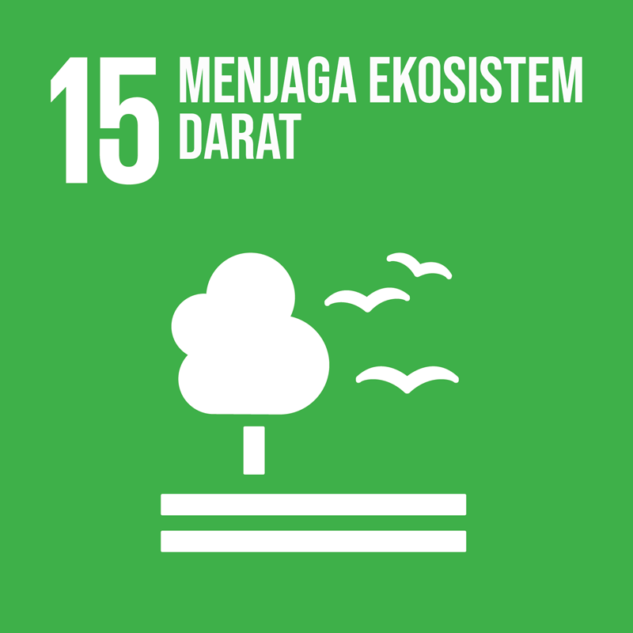
Protecting, restoring, and promoting sustainable use of terrestrial ecosystems, halting deforestation, and protecting biodiversity.
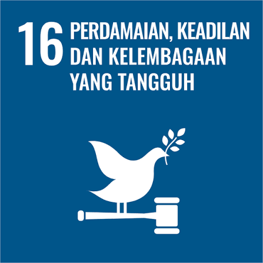
Promoting peaceful and inclusive societies, access to justice, anti-corruption efforts, human rights, and accountable institutions.
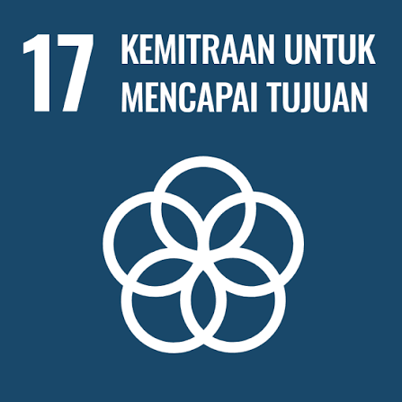
Strengthening global partnerships across governments, civil society, academia, and the private sector for finance, technology, and policy.

Tujuan SDGs 4, Pendidikan Berkualitas

SDG 4 focuses on ensuring inclusive and equitable quality education and promoting lifelong learning opportunities for all by 2030, covering early childhood, primary, secondary, technical/vocational, and higher education alongside teacher quality, safe facilities, and gender/inclusion equity.
4.1 Free, equitable, and quality primary and secondary education for all girls and boys by 2030.
4.2 Quality early childhood development, care, and pre-primary education for all children by 2030.
4.3 Equal and affordable access to technical, vocational, and higher education, including university, by 2030.
4.4 Increase the number of youth and adults with relevant technical, vocational, and entrepreneurial skills by 2030.
4.5 Eliminate gender disparities and ensure equal access for vulnerable groups, including persons with disabilities and indigenous peoples.
4.6 Ensure youth and a substantial proportion of adults achieve literacy and numeracy skills by 2030.
4.7 Equip learners with knowledge and skills for sustainable development, human rights, gender equality, peace, and global citizenship.
4.a Build and upgrade child-, disability-, and gender-sensitive education facilities providing safe and inclusive learning environments.
4.b Expand global scholarships for developing countries to access higher education and technical/ICT/scientific programs.
4.c Increase the supply of qualified teachers, including through international cooperation in teacher training in developing countries.
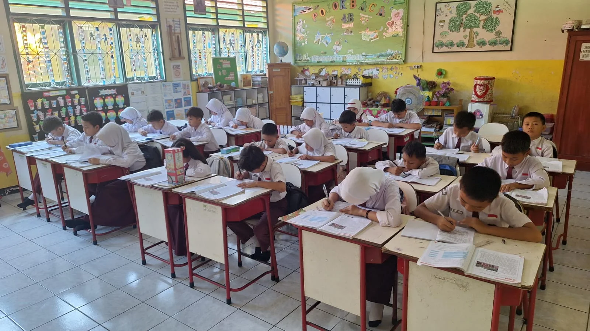
While learning resources are widely accessible, study habits often face digital distractions, varying comprehension speeds, and exam-focused study rather than deep understanding. National education indicators—such as mean years of schooling, expected years of schooling, academic assessments, and higher education participation—highlight the need for evidence-based improvements and focused study routines.

Key long-term challenges include closing gaps in average and expected years of schooling, raising higher education participation rates, improving learning outcomes across core subjects, and strengthening education quality to support Indonesia's 2045 vision.
Moving forward requires policy consistency aligned with long-term national development roadmaps, inclusive participation from educators, families, and communities, evidence-based policymaking, and coherent legal frameworks to drive sustainable quality improvements.
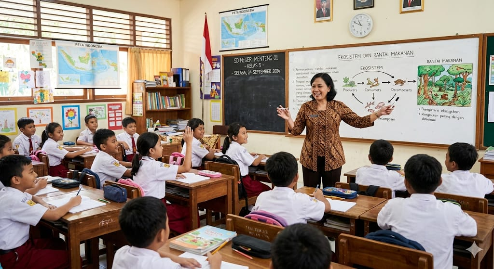
Quality education shapes critical thinking, character, and adaptability needed for Golden Indonesia 2045. Qualified, well-supported teachers—paired with adequate school facilities and equitable distribution across regions—are central to nurturing capable future generations.
Access disparities remain noticeable between urban and rural or remote areas due to travel distance, economic constraints, uneven school and teacher resources, and local social norms that can limit educational opportunities for girls.
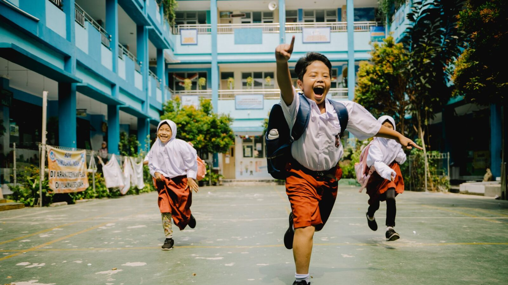
Achieving SDG 4 strengthens literacy and numeracy, expands fair economic opportunities, encourages youth creativity and innovation, and fosters social tolerance through collaboration among families, schools, communities, and government.
Communities act as partners, supporters, and oversight contributors in planning, implementing, and evaluating education programs alongside schools and government.
Indonesia's role focuses on broadening equitable access, improving teacher quality and school infrastructure, strengthening character and future skills toward 2045, and advancing SDG 4 commitments.

Sila Terkait: Sila ke-2 (Kemanusiaan yang Adil dan Beradab), Sila ke-4 (Kerakyatan yang Dipimpin oleh Hikmat Kebijaksanaan dalam Permusyawaratan/Perwakilan), dan Sila ke-5 (Keadilan Sosial bagi Seluruh Rakyat Indonesia).
Nilai & Pentingnya: Pendidikan berkualitas merupakan hak dasar setiap manusia. Nilai kemanusiaan dan keadilan sosial mendorong pemerataan kesempatan belajar bagi semua tanpa diskriminasi, sementara nilai musyawarah membantu menyusun program pendidikan yang tepat sasaran dan sesuai kebutuhan bersama.
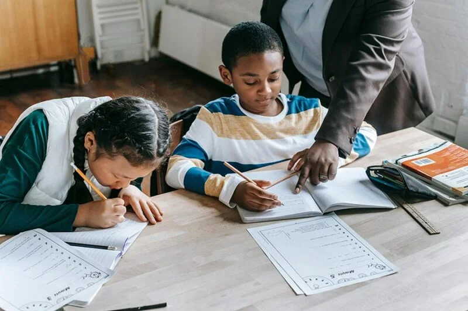
Effective solutions combine inclusive digital learning platforms for remote areas, continuous teacher training and support, inclusive policies for students with disabilities and marginalized groups, and safe, well-equipped learning spaces that build both knowledge and character.

Nilai yang Diterapkan: Kepedulian, tanggung jawab, dan keadilan dalam belajar dan berbagi (Sila ke-2 dan Sila ke-5).
Tindakan & Dampak ke SDGs 4: Membuat ringkasan materi pelajaran yang mudah dipahami, berbagi catatan dengan teman yang kesulitan, serta aktif dalam kelompok belajar yang inklusif membantu memperluas akses pemahaman belajar yang setara dan mendukung tercapainya SDGs 4.
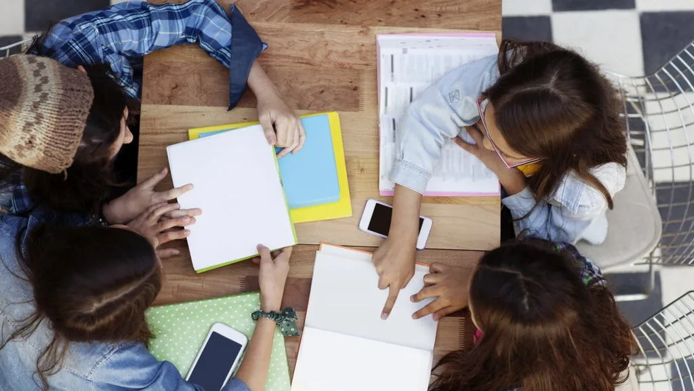
Bilateral cooperation between two countries—such as education exchanges, teacher capacity programs, and scholarship initiatives like Australia Awards—helps share effective teaching practices and broaden academic opportunities.
Regional cooperation within ASEAN—such as education ministerial forums and university networks—supports cross-border learning, academic exchange, and quality alignment across Southeast Asia (connected to SDG 4 and SDG 17).
Multilateral cooperation through the UN, UNESCO, and UNICEF under the Education 2030 and SDGs agenda supports global benchmarks, data sharing, literacy and numeracy initiatives, and equitable access for children.
Broader international cooperation—including global academic competitions, cross-continental exchanges, and partnerships with international bodies—helps learners and educators adapt to changing skills and global challenges while advancing SDG 4 and SDG 17.

Kemanusiaan & Menghargai Perbedaan: Kerja sama pendidikan antarnegara—seperti pertukaran pelajar, pelatihan guru, dan beasiswa—menjunjung martabat manusia dan hak belajar yang setara. Perbedaan sistem, bahasa, dan budaya disikapi dengan saling menghormati agar hubungan tetap harmonis.
Musyawarah, Keadilan & Perbedaan Kepentingan: Musyawarah dan kesepakatan bersama memastikan kerja sama berjalan transparan dan tidak memaksakan kehendak sepihak. Ketika muncul perbedaan kepentingan antarnegara, Indonesia perlu mengutamakan keadilan sosial (Sila ke-5), kemanusiaan (Sila ke-2), dan kebijaksanaan (Sila ke-4) melalui dialog terbuka, pembagian manfaat yang proporsional, serta peningkatan kapasitas bersama.
Nama: Felicia Becanessy Yap
Nomor Absen: 15
Kelas: IX-2

Working on this IPS, PPKn, and TIK collaboration project helped connect SDG 4 quality education to real-world access gaps, social fairness values, and careful web design and coding skills.
- https://sdgs.ub.ac.id/inacol-sdgs/17-goals-bappenas/sdgs-4-pendidikan-berkualitas/
- https://unesdoc.unesco.org/ark:/48223/pf0000246300
- https://globalgoals.org/goals/4-quality-education/
- https://australiaawardsindonesia.org/
- https://www.unesco.org/en/education/sdg4
- https://www.unicef.org/indonesia/education